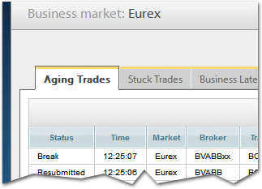
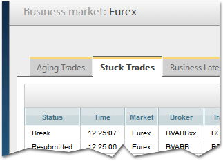
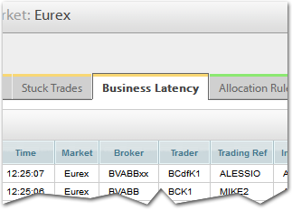
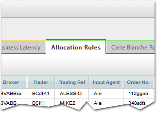
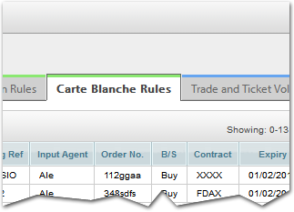
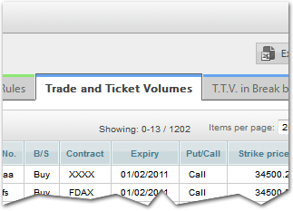
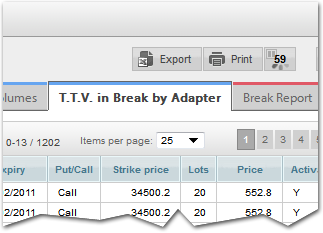
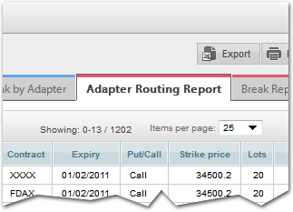
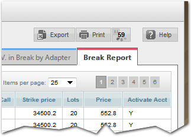

KPI - overview:
- Aging trades
-

Count of trades that are not broken, but have been in system for longer than 15 minutes.
- Stuck trades
-

List of all breaks with their location, status and time in system.
- Business Latency
-

Breakdown of trade lifecycle duration by time band.
- Allocation Rules
-

Count of ‘hits’ on Allocation Rules.
- Carte Blanche Rules
-

Count of ‘hits’ on Carte Blanche Rules.
- Trade and Ticket Volumes
-

Cumulative count of trades that have passed through each adapter.
- TTV in Break by Adapter
-

Count of breaks by adapter.
- Adapter Routing Report
-

Count of trades that have passed down all pathways on front screen.
- Break Report
-

Lists all trades that have been manually resubmitted, with the user name and reason.